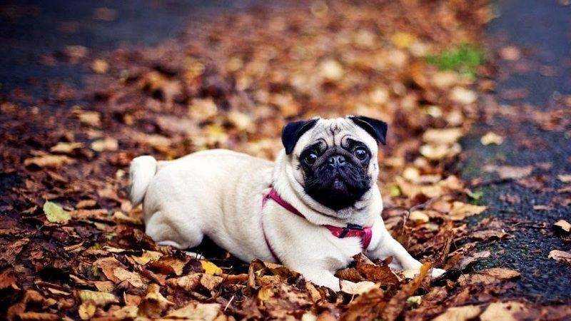
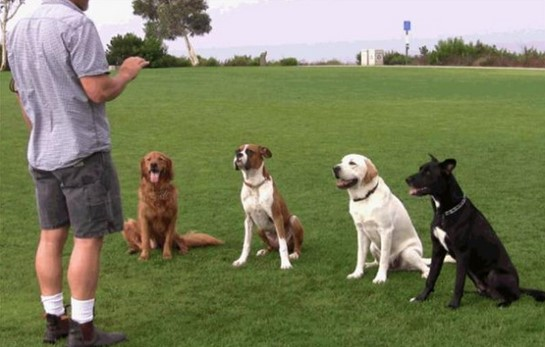
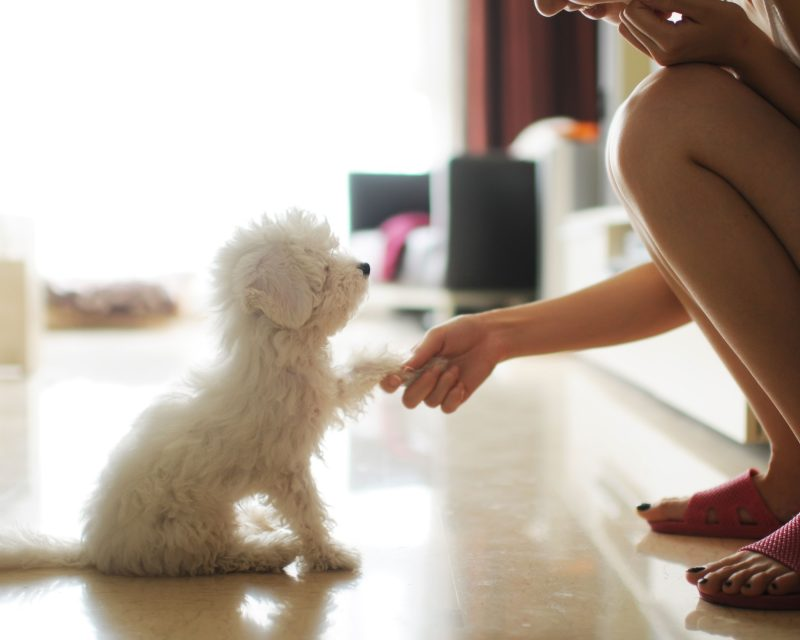
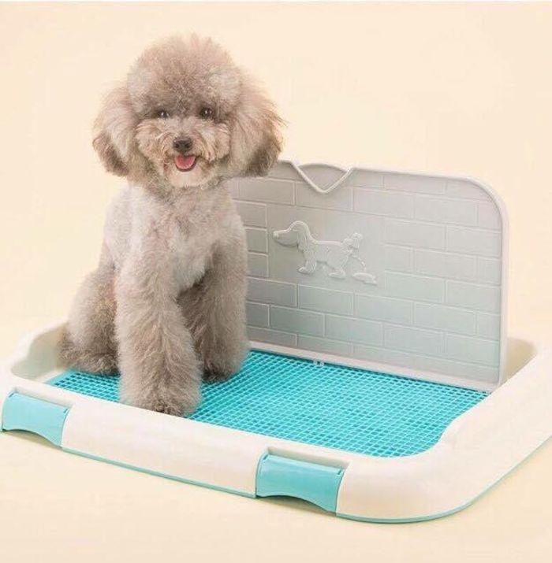
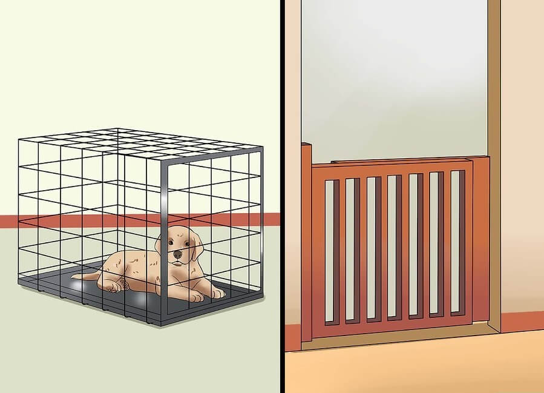
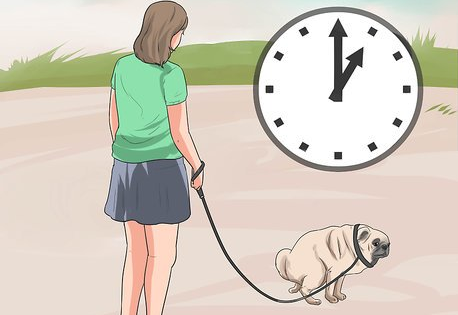
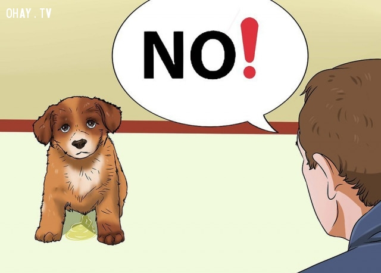
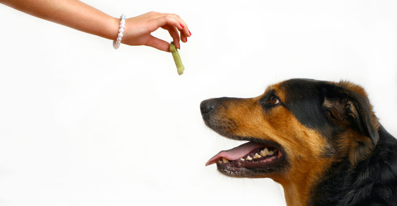
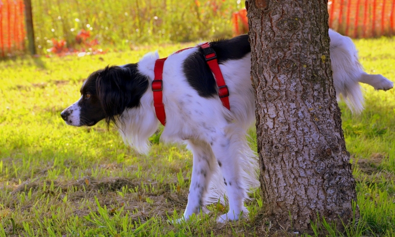

– Dành sự yêu thương hết mực cho chó: Để huấn luyện được cún trước tiên ạn phải dành nhiều thời gian quan tâm, chăm sóc chúng. Thường xuyên dắt chó đi dạo, cho ăn, tắm rửa vệ sinh cho é tạo tình cảm quyến luyến vui vẻ giữa 2 bên.
– Khi ra lệnh phải ngắn gọn, rõ ràng, cương quyết. Giữa các bài tập cần có thời gian nghỉ từ 20s – 30s, tránh ra dồn dập các lệnh sẽ khiến chó không hiểu và không làm theo được.

– Cần thưởng cho chó (đồ ăn, âu yếm vuốt ve) mỗi khi bé hoàn thành được bài tập.
– Tuân thủ quy trình huấn luyện, làm theo đúng giáo trình từ dễ đến khó, tránh dạy lung tung đang bài 1 nhảy sang bài 10.
– Phải hiểu rõ được tập tính của bé khi huấn luyện. Với các bé nhút nhát cần dùng biện pháp Như (động viên, âu yếm); với các é bướng bỉnh không chịu tập luyện cần cương quyết, rõ ràng .
– Thường xuyên cho chó ôn lại các bài cũ, tránh lâu ngày ko tập bé sẽ rất dễ bị quên.
– Quan trọng nhất: Trong quá trình huấn luyện cần phải kiên nhẫn, tuyệt đối không đánh đập, chửi mắng bởi sẽ khiến chó sợ hãi và không có tinh thần để hoàn thành bài tập.
– Khi cún đang đứng bạn để thức ăn trước mũi cún sau đó từ từ hạ xuống đất. Cún ham ăn sẽ đưa mũi theo và hạ mình chúi về phía trước. Lúc này bạn dùng tay ấn nhẹ lên phần vai bắt cún nằm xuống và hô lệnh “Nằm”. Khi cún đã nằm thì thưởng đồ ăn cho cún.

– Lặp lại từ 10 – 15 lần cho cún quen sau đó cho nghỉ.
– Khi chó đang nằm hoặc ngồi bạn đứng phía trước mặt, tay cầm thức ăn để ngang mũi, sau đó cầm thức ăn lùi về phía sau và nâng lên cao. Chó ham ăn sẽ đứng lên theo phản xạ. Lúc này bạn hô lệnh “Đứng” và thưởng thức ăn cho chó.
(*) Lưu ý :
+ Trường hợp nếu chó ko chịu đứng dậy ta có thể dùng 1 sợi dây xích kéo chó đứng lên.
+ Lặp lại 10 – 15 lần sau đó cho chó nghỉ.
– Hô lệnh “Nằm” cho chó nằm xuống, tay trái cầm thức ăn, ta phải ấn nhẹ vào mông chó. Lúc này bạn di chuyển chân hướng về phía trước (tay trái vẫn cầm thức ăn nhử), và hô lệnh “Bò”. Ban đầu chưa quen tập cho chó khoảng 1m và thưởng đồ ăn, sau đó cho chó xa hơn rồi mới thưởng. Lặp lại 10 – 15 lần và ôn lại hàng ngày.
– Hô lệnh “Ngồi” cho chó ngồi xuống, chỉnh tư thế ngồi thẳng, vững chắc. Sau đó bạn hô lệnh “Chào” đồng thời dùng tay phải nâng chân phải trước của chó lên gập vào tai (giống tư thế chào cờ). Giữ nguyên tư thế khoảng 15 – 20s sau đó thưởng đồ ăn cho chó.

– Động tác này cần phải kiên nhẫn, tập lại nhiều lần chắc chắn sẽ thành công.
– Ra lệnh “Ngồi” cho chó ngồi xuống. Sau đó hô “Bắt Tay” đồng thời lấy tay trái nâng chân phải của chó lên để bắt tay, tay phải thưởng đồ ăn cho chó. Lặp lại động tác khoảng 15 lần sau đó cho nghỉ. Ôn lại vài ngày chó sẽ nhớ lệnh.

Bạn đã bao giờ cảm thấy phiền phức khi ngày nào cũng phải dọn những “chiến lợi phẩm” của cún khắp nhà? Bạn đã từng muốn cún không cún đi vệ sinh bừa bãi trong nhà nhưng chưa biết làm thế nào?
Bài viết cô đọng dưới đây của chúng tôi sẽ giúp các bạn huấn luyện cún đi vệ sinh đúng chỗ 1 cách nhanh và hiệu quả nhất. Để huấn luyện cún, chúng tôi đưa ra 5 ước như sau:
Chỗ đó có thể là trong nhà vệ sinh của gia đình bạn hay 1 góc sân, góc an công, sân thượng.
Mục đích của việc này là biết được lúc nào cún cần đi giải quyết vì đa phần cún thường đi vệ sinh sau khi ăn. Đa phần cún to thường ăn 2 lần/ngày vào lúc 12h trưa và 7h tối. Cún nhỏ thường ăn 3 lần/ ngày vào 7h sáng, 12h trưa và 7h tối.
Nên cho cún ăn uống đúng chỗ, đúng thời gian quy định. Thông thường 1 bữa ăn của cún chỉ nên diễn ra trong vòng 20 phút. Sau 20 phút hãy cất hết đồ ăn, nước uống để kiểm soát được lượng thức ăn thu nhận cũng như để cún hiểu rằng nó chỉ được ăn trong khoảng thời gian đó.
Nắm được thói quen cũng như quy luật đi vệ sinh của cún là cơ sở để thiết lập thời gian biểu huấn luyện cho thích hợp

Cách đơn giản nhất để bạn biết được thói quen đi vệ sinh của cún là theo dõi và ghi chép lại trong khoảng 2-4 ngày. Khi ghi chép nhớ tách riêng thời gian cún đi nặng và đi nhẹ. Một số chỉ tiêu bạn nên chú ý theo dõi và quan tâm đó là:
- Thời gian cún đi vệ sinh tính từ khi cún ăn và uống bữa gần nhất.
- Thời gian cún đi vệ sinh tính từ khi cún ngủ dậy.
Chuẩn bị một chiếc lồng phù hợp sẽ giúp việc huấn luyện cún nhanh chóng và hiệu quả hơn nhiều. Vì đa phần cún sẽ không đi bậy trong chuồng nó ở và ngoài ra, chuồng cún là công cụ để cún chịu hình phạt khi không nghe lời (cụ thể ở phần dưới).
Vậy chọn chuồng như thế nào cho phù hợp với mỗi chú cún?
- Kích thước lồng chỉ được phép vừa đủ cho cún nằm và xoay người, không được rộng quá kích thước của nó.

- Các bạn chọn lồng sao cho cún nằm vào thấy hơi chật, nếu đi nặng hoặc tè ra chuồng thì sẽ nằm lên phân hoặc nước tiểu. Các ạn đừng lo cún sẽ nằm đè lên phân và nước tiểu vì trừ khi con nào í quá không kiềm chế được nữa mới tiểu và ị ra chuồng, cún đa phần cún sẽ không tiểu hay ị rồi nằm lên. Vì lồng chật chỉ đủ nằm, không đi vệ sinh được nên cún sẽ nhịn và khi không nhịn được sẽ kêu ầm lên, lúc đó ạn biết cún đã muốn đi vệ sinh
Tùy thuộc vào thời gian biểu của các ữa ăn, thói quen đi vệ sinh của cún cũng như thời gian rảnh của mỗi người chủ mà các ạn có thể lập thời gian biểu huấn luyện cho cún 1 cách phù hợp nhất .
Dưới đây là thời gian biểu chúng tôi thiết kế dành riêng cho đa phần người Việt Nam - Những người chủ đi làm cả ngày từ 8h sáng đến 18h tối hàng ngày (cún lớn hơn 1 năm tuổi và ăn 2 lần/ngày):

- 6h:30: Thức dậy, đưa cún ra chỗ muốn nó đi vệ sinh
- 6h:40 – 7h:00: Cho cún chơi đùa tự do.
- 6h:40 – 7h:00: Cho cún chơi đùa tự do.
- 7h:20 – 7h:30: Đưa cún ra chỗ muốn nó đi vệ sinh. Sau đó nhốt vào chuồng khi chủ đi làm (Hãy ỏ vào chuồng vài món đồ chơi cho cún gặm, ko được bỏ đồ ăn và nước uống).
- 18h:00: Chủ đi làm về, thả cún ra.
- 18h:15 – 18h:30: Dẫn cún ra chỗ muốn nó đi vệ sinh và sau đó cho cún chơi đùa tự do.
- 18h:30: Cho cún ăn và uống (cất ngay đồ ăn và nước uống đi sau khi cho cún dùng xong).
- 19h:00: Đưa cún ra chỗ muốn nó đi vệ sinh.
- 19h:15: Nhốt cún vào chuồng.
- 23h:00: Đưa cún ra chỗ muốn nó đi vệ sinh. Sau đó nhốt vào chuồng đến sáng.
Ngoài việc thực hiện theo thời gian biểu, để huấn luyện cún đi vệ sinh thành công chúng ta cần lưu ý một số chi tiết quan trọng như sau:
Việc bắt cún thay đổi 1 thói quen không phải là việc có thể cho kết quả nhanh chóng được. Bởi vậy để thành công, bạn cần rất kiên trì, yêu thương và độ lượng với cún như đối với trẻ con.
- Tức là khi muốn cún đi vệ sinh, bạn có thể nói “Milu, đái” hay “ bắt đầu”… Không quan trọng là bạn nói từ gì mà quan trọng là bạn phải nhất quán. Đã nói từ gì thì chỉ nói từ đó khi đưa cún ra đúng chỗ đi vệ sinh

- Những ngày đầu cún có thể không hiểu bạn nói gì nhưng sau 1 thời gian làm quen, thậm chí bạn chỉ cần hô đúng khẩu lệnh đó là cún sẽ làm đúng hành động như ạn muốn (đi vệ sinh đúng chỗ đã được huấn luyện) mà không cần bạn phải dắt cún đi.
- Khen thưởng là việc làm rất cần thiết và quan trọng giúp cún hiểu rằng nó làm như vậy là đúng và rất giỏi.

Khi cún đi vệ sinh đúng chỗ, bạn hãy khen thưởng cún bằng lời nói, hành động (ôm ấp, xoa đầu…), hay th c ăn…Nên nhớ việc khen thưởng chỉ nên diễn ra trong vòng 5 giây sau khi cún đi vệ sinh xong vì nếu lâu hơn, cún sẽ không hiểu bạn đang khen thưởng cho việc gì.
- Khi cún đi sai chỗ và bạn chứng kiến thấy, hãy làm 1 hành động để cún ngưng việc đó lại nhưng không được làm cún quá giật mình và hoảng hốt. Ví dụ như ạn có thể vỗ tay hay nói “không được”…Sau đó bạn dọn sạch chỗ đó để cún không ngửi thấy mùi và nghĩ đó là chỗ đi vệ sinh nữa.
- Bạn tuyệt đối không nên phạt hay làm cún giật mình, sợ hãi vì cún sẽ không hiểu nó đang làm sai chuyện gì mà nó sẽ nghĩ việc đi vệ sinh là 1 việc xấu và nó sẽ có xu hướng trốn kỹ hơn khi đi để không ị bạn phát hiện cho đến khi “sản phẩm” bốc mùi
- Nếu cún vẫn đi vệ sinh sai chỗ, bạn có thể nhốt cún trong chuồng khoảng 10’, sau đó mới dẫn đi vệ sinh, tới chừng nào đi thì thôi. Sau khi nó đi vệ sinh rồi mới cho nó chơi cún không thì phải ở trong chuồng.

Lưu ý: Ngoài phương pháp với 5 ước như trên, bạn có thể sử dụng “Nước xịt hướng dẫn chó đi vệ sinh đúng chỗ” bằng cách trước khi chó đi vệ sinh, xịt chất dẫn mùi lên chỗ bạn muốn chó đi vệ sinh để chó đánh hơi, lặp lại nhiều lần, chó sẽ có phản kháng có điều kiện. Sau này sẽ đi vệ sinh ở nơi có mùi hương này ( 3-5 ngày có thể tạo thói quen đi vệ sinh đúng nơi quy định). Bạn có thể mua nước xịt của hãng Joyce & Dolls rất tốt và sử dụng hiệu quả tại các cửa hàng bán đồ thú cưng trên toàn quốc.
Trên đây là toàn bộ nội dung hướng dẫn cách thức nuôi và dạy chó đúng cách. Hi vọng với cuốn cẩm nang này sẽ giúp bạn đọc, các chủ chó và những người yêu chó có thêm được những kinh nghiệm quý báu trong quá trình nuôi dạy cún cưng của mình.
 Bài viết gần đây
Bài viết gần đây

August 31, 2019

August 31, 2019

August 31, 2019

August 31, 2019

August 31, 2019